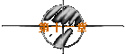
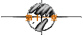

|
| |
※第一次的亲密接触※
written by jht.

※
发信人： FlyinDance (轻舞飞扬)
标 题： 1997/12/30
日 期： Wed Nov 31 02:16:38 1997
在记录今天的心情前□得先吁口气□试著放松□
原本提醒自己11点前要回家的□这样我才能及时完成今天的心得报告□:)
结果灰姑娘还是无法在午夜12点前回家□:P
今天凌晨在线上碰到他时□他说他感冒了□害我担心了一下□
原来是他又在耍痞□哼！□真是的□:(
但他竟然开始暗示我该讨论见面的细节了□
我好高兴□：）
将近一个月的长期抗战□我终于赢了□:)
为了小小地惩罚他让我等了一个月之久□
我骗他说我长得并不可爱□:P
本想继续逗他的□直到他说：“同是天涯没貌人，相逢何必太龟毛”□
我才答应见他□:)
我们约在大学路的麦当劳□时间是晚上七点半□
好小气的痞子□竟然舍不得请我吃一顿□:(
小雯说我该迟到个半小时□算是对男性几千年的专制做出无言的抗议□
我才不要ㄌㄟ□我已经浪费了一个月的时间在等待□
我可不愿意再多等待一分一秒□:)
我穿著去垦丁时的那套咖啡色系的衣裤□还有Cappuccino背包□
我要带著那天的愉悦心情去跟他见面□:)
把单车停在NET店门口□然后我慢慢地走到麦当劳□
我一眼就认出蓝色的他□他不仅全身蓝色□连发呆的样子也很蓝色□
像是熟识的朋友般□我轻拍了一下他的肩膀□
因为我想看他回过头来时□满地找眼镜碎片的模样□:)
但他的眼镜并没有跌破□我想他一定是吓呆了□:P
在麦当劳里□我仔细地端详著他□
他长得很斯文□但笑起来邪邪的□
果然有被称为痞子的本钱□:)
他讲话总喜欢加上手势□好像说话的是他的手□而不是嘴巴□
咦？□在网路上的聊天不也是靠手吗？□
因此有一段时间□我忘了我到底是置身于网路或是在现实之中？□
我们从盘古开天□聊到如何治愈狗的自闭症□
我很自然地和他谈天说地□那种感觉像是在自言自语□
因为当我说话时□他总是静静地聆听与在意□
我也很喜欢今晚见面聊天时的气氛□就像坐在沙滩上□吹著凉凉的海风□
然后诉说著远方渔船的故事一样□很平淡也很轻松□
但我就是想考他□所以我掰出了一套“咖啡哲学”□
当我掰完后□我又看到了他那蓝色的发呆表情□:)
没想到他竟然也能掰出一套“流体力学”□
我发呆的样子□像咖啡色的吗？□
我开始觉得他不是一个虚幻的人□
他并不只是存活在虚幻的网路世界里□
在现实生活中□他依然阳刚而坚强、温柔却深沉、敏感又多变□
我也觉得我的防御工事□就像是构筑在沙滩上的城堡□
根本经不起海浪的冲击□
我在他面前□已不再好强□因为我彻底认输了□
所以□我答应了他明天的邀约□
嗯□离三点一刻还有一个小时□还是再煮杯曼巴咖啡吧！□
我知道他那时一定也会上线□我不想让他失望□更不想让我失望□:P
小雯说这叫制约反应□她说我已经没救了□:~
制约就制约吧！□反正我心甘情愿□:)
※
发信人： FlyinDance (轻舞飞扬)
标 题： 1997/12/31
日 期： Thu Jan 1 06:03:52 1998
嗯□该用第二人称的“你”□而非第三人称的“他”了□
因为我决定让你分享我内心最深处的秘密□:)
你果然如我预期般地在三点一刻上线□看来你也被我制约了ㄛ！□:)
只可惜我们下午还得去看电影□不然我们又可以像从前般聊到天亮□
赶快睡吧！□我可不想让你看到我憔悴的模样□:~
我在中午12点左右醒来□先洗个澡吧！
对女孩子而言□饭可以不吃□澡不可不洗□:P
我哼著歌□那使我想起开学那天在工学院路上的轻舞□:)
然而当我穿上衣服时□我却看到了我右手臂上的红斑□
我愣愣地看著那处红斑□全身彷佛被冻僵□
在解冻后的那一刹那□我蹲在浴室里□哭了起来□
原来过去这三个多月以来□我只能在网路里FlyinDance□
并不能在现实生活中轻舞飞扬□
所以我决定听妈的话□回到台北□对自己的生命负责□
擦乾了眼泪□待会你就来了□
今天我们要去看电影呢！□应该要愉快的□
可是为什么要挑铁达尼号呢？□我对悲剧一向是没有抵抗力的啊！□
今天的天气很好□台南的天气一向如此□
我把脸蛋藏在你的身后□毕竟我已经没有本钱再晒一点太阳了□
即使今天的阳光只是轻轻柔柔的。
坐在你的机车后座□我可以看到你耳后泛起的红潮□
痞子□其实我和你一样□耳根也会发烫□
然而这只有拂过我耳畔的风可以看见□
而你绕啊绕的□好像在找停车位□
但我知道□你只是想让我多待在你身后一会□
我用发夹绑了个马尾□那是因为小雯说我脸型的弧线很迷人□
所以我不想让我的长发遮住我的脸□
痞子□我希望让你永远记住我现在最美丽的模样□
因为过了今天□我也许就不再美丽了□
在排队买票时□是我最接近你的时候□
我甚至希望我们就这样一直排下去□买不到票也没关系□
但我的右手臂不时地碰触到你的左手臂□
我感觉到我右手臂上的红斑正在冷笑著□
在南台戏院内□我终于克制不住我自己□
我突然发觉我就像Titanic一样□即将沉没在冰冷的海底□
亲爱的Jack□你又该如何呢？□hate？□help？□hold？□
痞子□你并不浪漫□你不是那种会被虚构的爱情故事所感动的人□
除了Jack说了那句：
“Rose, listen to me.. Listen...
Winning that ticket was the best thing that ever happened to me..
It brought me to you... And I'm thankful, Rose... I'm thankful...”
这时我才看到你坐直身子□牵动了一下眉间和嘴角□
痞子□你知道吗？□我也有同感□
你提醒我电影散场了□
没错□属于我的电影已经散场□但属于你的人生还是得继续□
痞子□不是吗？□
但我还是想自私地保留一些跟你有关的东西□
我要你在票根上签名□痞子□你好笨□
那是我认输的表示□我心里希望你签下你的本名□
这样我以后的思念才会更具体□如果还有“以后”的话□
而且我才会更加确定□你并不只是存活在网路上□
痞子□我终于可以走在Dolce Vita的香水雨中□
谢谢你让我体会“甜蜜的日子”的真谛□
但很抱歉□再见的话我说不出口□
而且既然从网路的mail开始□就应该以网路的mail结束□
距离我第一次mail给你的日子□也已经有三个多月了□
时间似乎不算短□但也不能以长来形容□
我们之间的故事是由我起头的□所以也要由我来结束□
这叫“解铃还需系铃人”□也叫“有始有终”□
痞子□这次我的成语用得对吗？□
也许正如你所说的□网路虽然迅速，但并不完美□
我可以很快地寄给你我的思念□却无法附上泪滴□
嗯□天快亮了□
待会再寄给你最后一封mail后□我就该走了□
现在的你□应该正在熟睡吧！□
※
看完她的mail，我的心情又像是坐了一次云霄飞车..
但这次更紧张刺激..因为这台飞车还差点出轨..
我从她的日记里，发现了隐藏在她聪明慧黠的谈吐下..
竟然同样也有颗柔情细腻的心..
我不禁想著..当初她在写日记时..会想到日后有别人来阅读她的心吗？..
或者只是以网路世界里的她为发信人..而以现实生活中的她为收信人？..
又或者是相反呢？..
连续两个星期..我习惯以自我催眠的方式..
去面对每个想起她的清晨与黄昏，白天与黑夜。
我不断地告诉我自己..她只能在虚幻的网路里FlyinDance..
并不能在现实生活中轻舞飞扬..
希望能去掉这种锥心刺骨的悸动。
我也不断地去逃避..逃避pc..逃避任何与咖啡色有关的东西..
把自己放纵在书海中..隐藏在人群里..
希望能逃避这种刻骨铭心的感觉。
但我还是失败了...
因为锥心刺骨和刻骨铭心，都有骨和心。
除非我昧著良心..除非我不认识刻在骨头上的那些字..
我的催眠术才会成功。
但我却是个识字且有良心的人...
原来我并非不思念她..我只是忘了那股思念所带来的激动而已..
就像我不是不呼吸..我只是忘了我一直在呼吸而已..
呼吸可以暂时摒息，但却无法不继续。
所以..我决定去找小雯碰碰运气..
那天是1998年1月15日..一早便下起了雨..台南的天气开始变冷了..
是天气的缘故吧！..我按门铃的手一直颤抖著..
『请问小雯在吗？..』
《This is 小雯 speaking..May I have your name？..》
『我..我..我是痞子..』
实在不知道该怎么形容我的名字..
jht她不知道..我老爸给的名字她也没听过..只好这样说了..
《Just a minute！..I go down right now！..》
没多久..我听到一声关门的巨响..
然后是一阵急促且匆忙的脚步声..
阿泰有一套在武侠小说里所形容的接暗器的方法..叫“听声辨位”..
像这种类似放盐水蜂炮的脚步声..应该是B型的女孩子..
小雯随便绑了个马尾..而且还没用发带或发夹..只用条橡皮筋..
长相如何倒也来不及细看..因为男生的目光很容易被她的胸围所吸引..
更狠的是..她还穿紧身的衣服...使我的眼睛死无葬身之地..
如果是阿泰来形容的话..他会说那叫“呼之欲出”..
《你就是痞子？..》
她仔细打量著我..满脸狐疑..
『Yes...This is 痞子 speaking..』
我学她讲话..也许会让她对我有亲切感..
《她在这里..》
说完后给了我一张字条..上面写著“荣总”..和一间病房号码..
我愣愣地看著她..不过这次的目光往上移了25公分..停留在她的眼睛上..
《在发什么呆？..还不给我赶快去看她！..》
『这是...？..』
《Shut up！..别罗唆了..快去！..还有台北比较冷..记得多穿几件衣服..》
“砰”的一声..她关上了公寓大门..
然后又是一阵盐水蜂炮声..
小雯恐怕不仅是B型..而是B+型..
下次要跟阿泰报这个明牌..让他们去两虎相争一番..
我听了小雯的话..多带了几件衣服..
不过不是因为我担心台北比较冷..而是因为我不知道要去多久？..
我打了通电话给在台北工作的老妹..告诉她我要去住几天..
她问我为什么？..我说我要去找一只美丽的蝴蝶..
我搭上11点40分远航往台北的班机..
我想两个星期前..她一定也搭同样的班次..
一上飞机..我立刻系了安全带..倒不是因为今天的空中小姐很ugly..
而是我已不再相信有任何美丽的空中小姐..身上会有与她类似的香味..
下了飞机..迎接我的..是另一种与台南截然不同的天气..
幸好台南今天也下雨..所以台北对我而言..只是比较冷而已..
我在老妹的办公室里..卸下了行李..
然后坐上277号公车..在荣总下了车..
我进了病房..她正在熟睡著..我静静地看著她..
她长长的头发斜斜地散在棉被外面..我并没有看到可以称为咖啡色的头发..
她的脸型变得稍圆..不再具有以前那种美丽的弧线..
而她的脸颊及鼻梁已经有像蝴蝶状分布的红斑..
但不管她变成如何..她仍然是我心目中那只最美丽的蝴蝶..
她长长的睫毛轻轻地跳动著..应该正在作梦吧!?..
她梦到什么呢？..
工学院路上的轻舞？..麦当劳里的初会？..南台戏院内的铁达尼号？..
还是胜利路巷口的香水雨？..
病房内愈来愈暗..
我想去开灯..因为我不想让她孤单地躺在阴暗的病房里..
但我又怕突如其来的光亮..会吵醒她的美梦..
正在为难之际..她的眼睛慢慢地睁了开来..
她张大了眼睛怔怔地看著我..
然后突然转过身去..我只看到她背部偶而抽搐著..
待续
|


 
